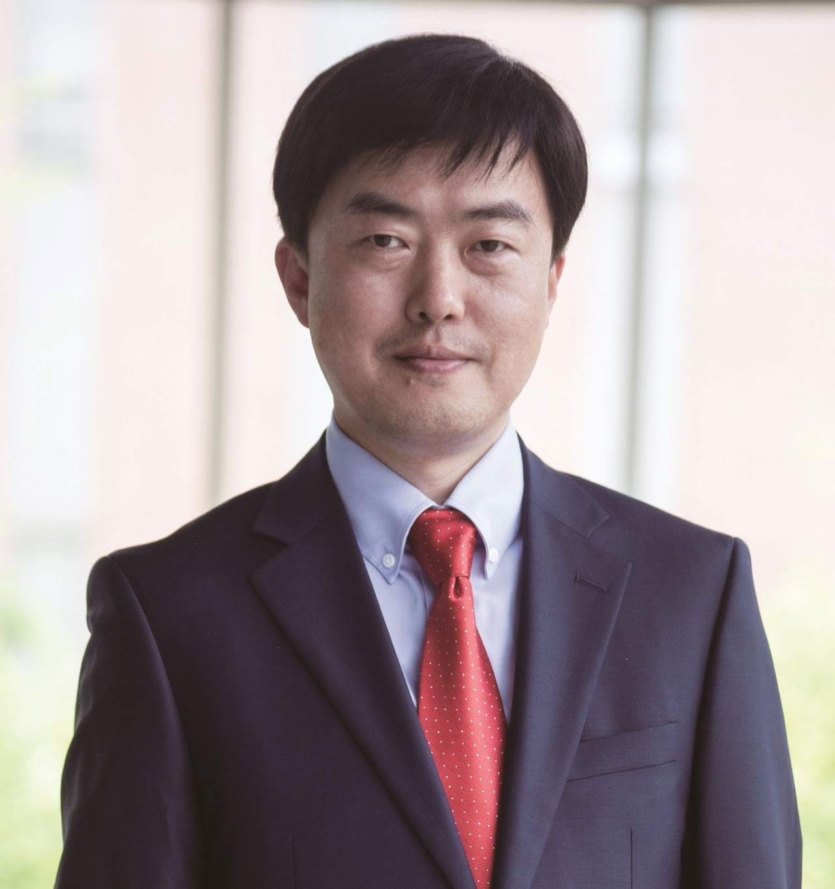

TAE HEE HAN
Tae Hee Han (한태희), Ph.D., Professor, Sungkyunkwan University
Program Manager in Computer System & Processing, National Research Foundation of Korea
Department of Semiconductor Systems Engineering
Department of Semiconductor and Display Engineering
Department of Artificial Intelligence
Office: Semiconductor Building, Room No.400528
Phone: +82-31-299-4587
Fax: +82-31-299-4909
Email: than@skku.edu